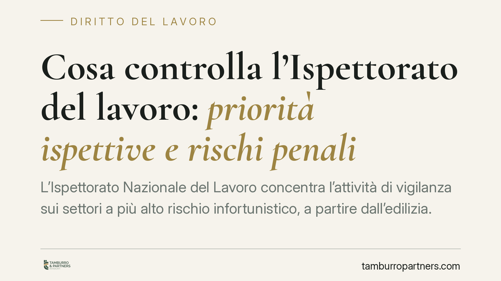

Cosa controlla l'Ispettorato del lavoro: priorità ispettive e rischi penali
L'Ispettorato Nazionale del Lavoro concentra l'attività di vigilanza sui settori a più alto rischio infortunistico, a partire dall'edilizia. Verifiche su regolarità dei rapporti, sicurezza, patente a crediti e sorveglianza sanitaria possono tradursi non solo in sanzioni amministrative, ma anche in contestazioni penali. Vediamo cosa controlla e come prepararsi, con i riferimenti normativi in vigore.

Quadro di riferimento
L'Ispettorato Nazionale del Lavoro (INL) è l'autorità che vigila sul rispetto della normativa in materia di lavoro, legislazione sociale e sicurezza. L'attività ispettiva si muove su due binari paralleli: la regolarità dei rapporti di lavoro e la tutela della salute e sicurezza nei luoghi di lavoro, disciplinata dal D.Lgs. 81/2008 (Testo Unico Sicurezza).
Nota sulle fonti. La sintesi di partenza richiamava un «Decreto Sicurezza» (D.L. 159/2025, conv. L. 198/2025) e una circolare INL n. 1/2026. Si tratta di riferimenti non verificabili alla data di redazione: non li citiamo come diritto vigente. Le indicazioni che seguono si fondano esclusivamente su norme in vigore e verificate. Chi intenda allineare le proprie procedure a eventuali novità del 2025-2026 dovrà accertarne prima la pubblicazione ufficiale in Gazzetta Ufficiale.
Che cosa verifica l'Ispettorato
I controlli, specie in cantiere, si concentrano su alcuni nuclei ricorrenti.
Regolarità del rapporto. Si verificano l'effettiva instaurazione dei rapporti, la corrispondenza tra mansioni dichiarate e attività svolta, il lavoro nero e quello irregolare.
Subappalti e responsabilità solidale. Negli appalti il committente e l'appaltatore rispondono in solido dei trattamenti retributivi e contributivi dovuti ai lavoratori, ai sensi dell'art. 29, comma 2, D.Lgs. 276/2003. Sul fronte sicurezza, l'art. 26 D.Lgs. 81/2008 impone obblighi di cooperazione e coordinamento e la verifica dell'idoneità tecnico-professionale delle imprese affidatarie.
Patente a crediti. Per i cantieri edili è richiesta la patente a crediti, prevista dall'art. 27 D.Lgs. 81/2008 nella versione introdotta dall'art. 29, comma 19, del D.L. 19/2024 (PNRR), convertito dalla L. 56/2024, e attuata dal D.M. 132/2024. È bene chiarire la cronologia: l'istituto non appartiene al testo originario del 2008, ma deriva dalla novella del 2024. L'assenza della patente, o un punteggio insufficiente, può comportare l'allontanamento dal cantiere.
Badge di cantiere, DPI e formazione. Si controllano l'identificazione dei lavoratori presenti, la fornitura e l'uso dei dispositivi di protezione individuale e l'avvenuta formazione, obblighi che fanno capo al datore di lavoro ai sensi dell'art. 18 e seguenti del D.Lgs. 81/2008.
Sorveglianza sanitaria. L'art. 18 D.Lgs. 81/2008 pone in capo al datore l'obbligo di nominare il medico competente nei casi previsti. Gli artt. 25, 38 e 41 disciplinano rispettivamente gli obblighi del medico, i suoi titoli e requisiti e la sorveglianza sanitaria con le relative visite.
Perché i controlli non restano sul piano amministrativo
È l'aspetto più sottovalutato. Una violazione in materia di sicurezza non genera solo sanzioni amministrative o prescrizioni: può diventare l'innesco di una responsabilità penale.
Il verbale ispettivo non è un semplice documento interno. Quando redatto da personale con qualifica di polizia giudiziaria, documenta fatti e dichiarazioni con valore probatorio nel procedimento, e può costituire la base di una successiva indagine penale.
Se da una violazione antinfortunistica deriva una lesione o la morte di un lavoratore, operano le aggravanti degli artt. 589 e 590 c.p.: l'art. 589, comma 2, c.p. per l'omicidio colposo commesso con violazione delle norme sulla prevenzione degli infortuni, e l'art. 590, comma 3, c.p. per le lesioni colpose commesse nelle stesse condizioni. In questi casi pena più severa e procedibilità d'ufficio cambiano radicalmente la posizione del datore.
Cosa fare in concreto
- Verificare la patente a crediti e il relativo punteggio prima dell'accesso in cantiere, acquisendo analoga verifica per ogni impresa in subappalto.
- Controllare la documentazione di sicurezza: nomina del medico competente, DVR aggiornato, attestati di formazione, consegna e idoneità dei DPI.
- Tracciare le presenze con badge di cantiere e tenere allineate le comunicazioni obbligatorie sui rapporti di lavoro.
- Gestire con rigore il contraddittorio in sede ispettiva: è opportuno verbalizzare osservazioni e riserve e conservare la documentazione che attesti l'adempimento degli obblighi.
- In caso di infortunio, è opportuno attivarsi tempestivamente per la ricostruzione documentale dei fatti, data la possibile rilevanza penale.
La distanza tra una contestazione amministrativa e un'imputazione penale, in materia di sicurezza, è spesso breve. Prevenire sul piano documentale è l'unica strategia realmente efficace.
Ogni storia di lavoro ha i suoi tempi.
Se gestisci HR e vuoi un confronto su contenzioso, ispezioni o licenziamenti, scrivi allo studio. Ti rispondiamo entro un giorno lavorativo.